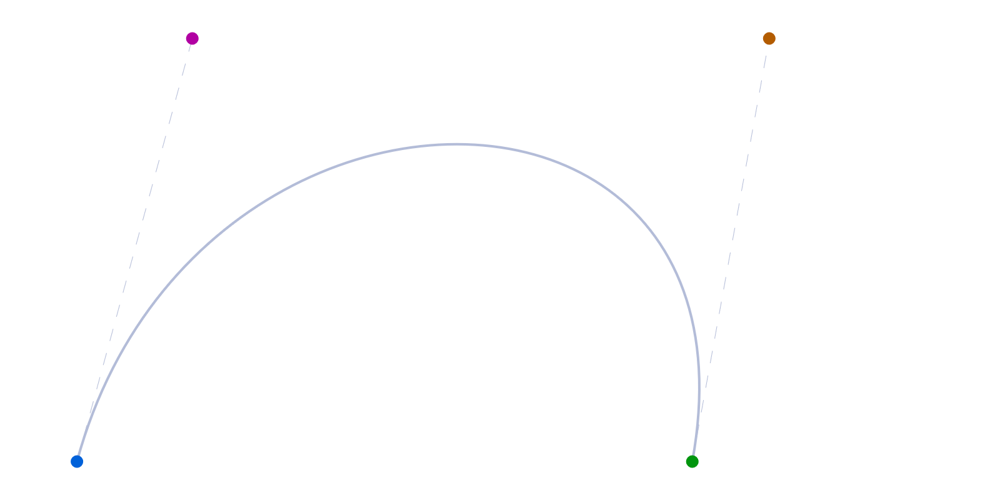
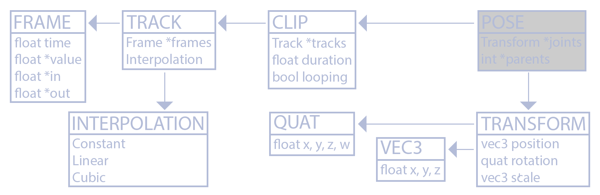
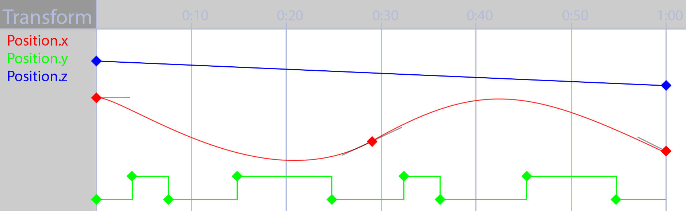
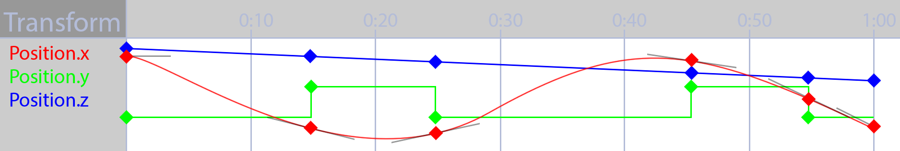

Curves
To animate game objects in code, you will need some understanding of curves. Let's start with the (cubic) Bézier curve.A Bézier curve segment has two points to interpolate between and two control points. These four points generate a curve. The image below has the points labeled as P1, P2 and the control points as C1 and C2.

Given the two points and the two controls, how can we generate a curve? Let's explore interpolating for a given time, t. Start by drawing a line from P1 to C1, from C1 to C2 and a line from C2 to P2. Then, linearly interpolate along those lines by the value of t.

The interpolated points from P1 to C1 form a line, let's call it A. The interpolated points from C2 to P2 form a line as well, let's call it B. Finally, the interpolated points from C1 to C2 form a line, let's call it C. Repeat the process and linearly interpolate along A to C and C to B. The resulting points will be called E and F respectivley.

One more time, interpolate along the line that is formed between E and F by t. The resulting point will be called R. This resulting point R can be plotted on the Bézier curve. If we calculate all points from t=0 to t=1, the Bézier curve can be plotted.

In real time, interpolating along a Bézier spline should look something like this:
Let's try to implement a Bézier curve segment in code. This implementation won't be used in the animation system. The definition of the data structure is trivial, it holds two points and two control points.
template<typename T>
class Bezier {
public:
T P1; // Point 1
T C1; // Control 1
T P2; // Point 2
T C2; // Control 2
};
Next, imlplement the interpolate function. As shown earlier, interpolating a Bézier curve segment can be implemented using 5 lerp operations.
template<typename T>
inline T Interpolate(const Bezier<T>& curve, float t) {
T A = lerp(curve.P1, curve.C1, t);
T B = lerp(curve.C2, curve.P2, t);
T C = lerp(curve.C1, curve.C2, t);
T D = lerp(A, C, t);
T E = lerp(C, B, t);
T R = lerp(D, E, t);
return R;
}
That's actually all we really need. Plotting this segment is trivial. First, initalize a segment to draw.
Bezier<vec3> curve;
curve.P1 = vec3(1, 5, 0);
curve.P2 = vec3(9, 5, 0);
curve.C1 = vec3(2, 0.5, 0);
curve.C2 = vec3(10, 0.5, 0);
vec3 red = vec3(1, 0, 0);
vec3 green = vec3(0, 1, 0);
vec3 blue = vec3(0, 0, 1);
vec3 magenta = vec3(1, 0, 1);
Next, draw the curves points and handles.
// Draw all relevant points
DrawPoint(curve.P1, red);
DrawPoint(curve.C1, green);
DrawPoint(curve.P2, red);
DrawPoint(curve.C2, green);
// Draw handles
DrawLine(curve.P1, curve.C1, blue);
DrawLine(curve.P2, curve.C2, blue);
Finally, we can plot the actual curve.
// Draw the actual curve
// Resolution is 200 steps since last point is i + 1
for (int i = 0; i < 199; ++i) {
float t0 = (float)i / 199.0f;
float t1 = (float)(i + 1) / 199.0f;
vec3 thisPoint = Interpolate(curve, t0);
vec3 nextPoint = Interpolate(curve, t1);
DrawLine(thisPoint, nextPoint, magenta);
}
Assuming there is a "DrawLine" and "DrawPoint" function declared, the above code should draw something that looks like this.

We were able to implement the Bézier Interpolate function by using 6 linear interpolations. To better understand how curves work, we need to expand these functions to what they actualy are. Linear interpolation, lerp(a, b, t) is implemented as (1-t) * a + t * b. We can re-write the interpolation function as:
template<typename T>
inline T Interpolate(const Bezier<T>& curve, float t) {
T A = curve.P1 * (1.0f - t) + curve.C1 * t;
T B = curve.C2 * (1.0f - t) + curve.P2 * t;
T C = curve.C1 * (1.0f - t) + curve.C2 * t;
T D = A * (1.0f - t) + C * t;
T E = C * (1.0f - t) + B * t;
T R = D * (1.0f - t) + E * t;
return R;
}
othing has changed, but we no longer call the lerp function. This will work for any data type T, so long as T perator*(const T& t, float f) is defined. Let's try to simplify this equation some more. Instead of using the variables A, B, C, D, E and R, we could write everything in-line. No local variables, we just expand the function by hand to be a one liner:
((P1 * (1 - t) + C1 * t) * (1 - t) + (C1 * (1 - t) + C2 * t) * t) * (1 - t) + ((C1 * (1 - t) + C2 * t) * (1 - t) + (C2 * (1 - t) + P2 * t) * t) * t
The formula above might look a bit intimidating, but it's just re-writing the interpolate function with everything being manually inlined. In ode, this would look like the following:
template<typename T>
inline T Interpolate(const Bezier<T>& curve, float t) {
return ((curve.P1 * (1.0f - t) + curve.C1 * t) * (1.0f - t) +
(curve.C1 * (1.0f - t) + curve.C2 * t) * t) * (1.0f - t)
+ ((curve.C1 * (1.0f - t) + curve.C2 * t) * (1.0f - t) +
(curve.C2 * (1.0f - t) + curve.P2 * t) * t) * t;
}
The code is hard to read, and not much faster than the previous version. So, why go trough all this trouble? So we can start simplifying the equation a bit. We can start by combining like terms:
-P1t3 + 3P1t2 - 3P1t + P1 + 3C1t3 - 6C1t2 + 3C1t - 3C2t3 + 3C2t2 + P2t3
That's starting to look a little easier to manage. Implementing this in code isn' too difficult either.
template<typename T>
inline T Interpolate(const Bezier<T>& curve, float t) {
return
curve.P1 * (t * t * t) * -1.0f +
curve.P1 * 3.0f * (t * t) -
curve.P1 * 3.0f * t +
curve.P1 +
curve.C1 * 3.0f * (t * t * t) -
curve.C1 * 6.0f * (t * t) +
curve.C1 * 3.0f * t -
curve.C2 * 3.0f * (t * t * t) +
curve.C2 * 3.0f * (t * t) +
curve.P2 * (t * t * t);
}
Simplify further by isolating like terms
P1( -t3 + 3t2 - 3t + 1) +
C1( 3t3 - 6t2 + 3t)+
C2(-3t3 + 3t2)+
P2( t3)
Implementing the equation in code is starting to get simpler too:
template<typename T>
inline T Interpolate(const Bezier<T>& curve, float t) {
float ttt = t * t * t;
float tt = t * t;
return curve.P1 * (-1.0f * ttt + 3.0f * tt - 3.0f * t + 1.0f) +
curve.C1 * (3.0f * ttt - 6.0f * tt + 3.0f * t) +
curve.C2 * (-3.0f * ttt + 3.0f * tt) +
curve.P2 * ttt;
}
We can simlify this further
P1( (1-t)3) +
C1(3(1-t)2t) +
C2(3(1-t)t2) +
P2(t3)
The code for this last simplification is eaven easier to read
template<typename T>
inline T Interpolate(const Bezier<T>& curve, float t) {
return curve.P1 * ((1.0f - t) * (1.0f - t) * (1.0f - t)) +
curve.C1 * (3.0f * ((1.0f - t) * 1.0f - t) * t) +
curve.C2 * (3.0f * (1.0f - t) * (t * t)) +
curve.P2 * (t * t * t);
}
If we graph out this final simplification, the x axis would be "normalized time" ranging from 0 to 1 and the x axis would be the value of either P1, P2, C1 or C2. The graph looks like this:

The graph shows the pint basis functions of a cubic Bézier curve. These functions express how the Bézier curve changes over time. For exaple, the influence of P1 drops over time, at t=0 the influence is 1, but at t=1 the influence of P1 is 0.
We went trough the exercise of simplifying a Bézier curve to see how these basis functions are derived. Bézier curves are easy to derive, other curves are not. For most curves, you will simply be given the final basis functions.
Why is everything templated?
The formula for evaluating curves doesn't change between scalar, and touple values. It's the same formula for a float as it is for a vec2, vec3 or quat. Whatever data type T is will work so long as T operator*(const T& t, float f) and T operator+(const T& a, const T& b) are defined.
The most common curve used in game animation is a Cubic Hermite Spline. Unlike Bézier splines, a hermite spline doens't use control points. Instead, the hermite spline uses tangents (or slopes) at a given point.
The point basis function of a Hermite Spline is shown below. P1 and P2 are the start and end points of the spline, S1 and S2 are the slopes, or tangents at P1 and P2 respectivley.

Implementing the above basis functions in code is similar to how the bezier basis function was implemented.
template<typename T>
T Hermite(float t, const T& p1, const T& s1, const T& p2, const T& s2) {
return p1 * ((1.0f + 2.0f * t) * ((1.0f - t) * (1.0f - t))) +
s1 * (t * ((1.0f - t) * (1.0f - t))) +
p2 * ((t * t) * (3.0f - 2.0f * t)) +
s2 * ((t * t) * (t - 1.0f));
}
It’s possible to convert between Bézier and Hermite splines, but that’s beyond the scope of what you need to know for animation. Some 3D content creation packages like Maya let animators create animation using a Hermite curves, while others like Blender3D use Bézier curves. It’s useful to understand how these functions work, regardless of which one drives our animation system. There are of course more curve types, but Bézier and Hermite are the common ones.
Pose generation
Let's explore what it takes to generate a pose from an animation for a game character. A Pose is a hierarchy of Transform's that acts like the characters skeleton. When an animation clip is sampled, it reutrns a Pose, which is a snapshot of the skeleton at a specific time of the animation clip.
An animation clip is made up of tracks. Every animated joint in a skeleton (every Transform in the resulting pose) can have a track. Each track is made up of several frames. A frame contains a time, a value and an incoming and outgoing tangents. The tangents are used to build curves out of Cubic Hermite Splines.

The most important part of pose generation is the animation tracks. Digital Content Creation (DCC) tools like Maya, 3DS Max or Blender allow animators to author animation by defining tracks. These tracks express change over time using curves. An animation track often looks similar to this:

Unity's Animation View is a great example of an animation curve editor.
An animator usually animated characters in a DCC tool using curves like what was shown above. In the early 2000's, most game animation pipelines would use some offline tool would then sample that animation at set intervals, and record any values that have changed over that interval.
At playback time, the game would linearly interpolate between the sampled points. This sampled animation method is faster, but it takes more memory. The approximated curve is generally close enough to be indiscernible at playback time. A comparison of a cubic hermite spline and it’s sampled counterpart:
We’re not going to implement the approximated method, instead we will sample curves in real time, similar to 3D DCC tools, like Unity’s animation view. Sampling curves in real time is a bit more expensive in terms of processing power, but modern hardware is powerful enough to handle doing so.
Interpolation types
When defining an animation curve, generally, it follows one of three interpolation methods: Constant, Linear and Cubic. Cubic curves can be expressed using any cubic equation like bezier curves (what blender does) or hermite splines (what maya does). We’re going to use hermite splines to represent cubic curves.
A constant curve keeps its value the same until the next keyframe, sometimes this type of curve is called a step curve. Visually, a constant curve looks like this:
A linear curve interpolates between two frames in a linear fashion (a straight line). As we’ve seen with the sampled curve approximation example earlier, if the samples of a linear track are close enough it can start to approximate other types of curves as well. A linear curve looks like this:
A cubic curve lets us define a curve in terms of values and tangents. How the tangents are interpreted depends on the type of curve. The benefit of cubic curves is that we can express relatively complex curves with very little data. The downside is that there are the most expensive curves to interpolate. A cubic curve looks like this (tangents are the lines coming out of the keyframes):
We’re going to declare interpolation types as a simple enum class. Like i mentioned earlier, cubic curves for us are going to be cubic hermite splines.
enum class Interpolation {
Constant,
Linear,
Cubic
};
Frames
What is a frame of data? Well, that depends on the interpolation type. If the interpolation is constant (step) or linear, a frame is just some time and a value. When the interpolation is cubic (besizer or hermite) we need to store tangents as well.
A hermite curve needs values for the length of the slope of each frame. Since a curve is made up of many segments, each frame needs to know how to scale both the incoming and outgoing tangents.
There is one more important consideration to make, how wide is a frame? By this I mean what is the data stored in the frame? Is it a scalar, a vector or maybe a quaternion? To make that decision, we actually have to skip forward a bit and think about how we might want to construct tracks.
There are two strategies to track construction. We could either build a scalar track (track of floating point values) and all higher dimension tracks (like vector or quaternion tracks) would just contain a number of scalar tracks. Or we could build specified track types, we could have a salar track that contains scalar values, a vec3 track that contains vec3 values, etc.
The advantage of having a scalar track and compositing higher order tracks from those is that each component of a track could be interpolated differently. They can also have a different number of keyframes. The disadvantage is the additional effort of implementation.
The advantage of just building higher order tracks is mainly in implementation. Since the Hermite function is templated, it could handle scalar values, vec3 and even quat values. On this site we will implement explicit scalar, vector and quaternion tracks. Don’t worry, we won’t have to write the same code multiple times, we will rely on templates.
The Frame class will contain a time, a value and both in and out tangents. If the interpolation type doesn’t need tangents we will simply ignore them. Let’s plan that a frame can be an arbitrary size. The time it contains will always be a scalar, but the value and tangent lengths can be any size.
The implementation of the frame class is trivial. It needs arrays for the value, in and out tangent and a scalar for the time. Let’s use a template to specify the size of each frame.
template<unsigned int N>
class Frame {
public:
float value[N];
float in[N];
float out[N];
float time;
};
Let's add couple of typedefs for the frame types we might encounter
typedef Frame<1> ScalarFrame;
typedef Frame<3> VectorFrame;
typedef Frame<4> QuaternionFrame;
Tracks
It was briefly mentioned in the "Implementing Frames" section, we will implement tracks that contain the exact data that the track represents. So, if a track is a vec3 track, it contains vec3 data and vec3 tangents (and contains a vector of Frame<3> objects).
This means that each component of our track is tied to the same time on the timeline. We can’t make a keyframe in the X position of the object without also adding a keyframe to the Y and Z components as well. The vec3 track below shows how each component of the vector has keyframes in the same positions.

A track is just a collection of frames and the frame class is templated, so the Track class will need to be templated as well. The Track lass will take two template parameters, the first is the type (this is intended to be float, vec3 or quat) and the other is the number of components.
The Track class will only need two members, a vector of frames and an interpolation type.
template<typename T, int N>
class Track {
protected:
std::vector<Frame<N>> mFrames;
Interpolation mInterpolation;
The Track class only needs a default constructor to initialize the mInterpolation variable. The generated copy constructor, assignment operator and destructor are going to be fine. We will also add an IsValid function, a track is only valid if it has at least two frames.
public:
Track();
bool IsValid();
Next, we will implement getter and setter functions for the number of frames and the interpolation type.
void Resize(unsigned int size);
unsigned int Size();
Interpolation GetInterpolation();
void SetInterpolation(Interpolation interpolation);
We will overload the [] operator to retrieve a specific frame. We need to be able to sample a track at a given time for a value,
T Sample(float time, bool looping);
Frame<N>& operator[](unsigned int index);
We will also implement some getter functions for the start and end time of the track as well as the duration.
float GetStartTime();
float GetEndTime();
float GetDuration();
We will need to implement some helper funtions. When a track is sampled, it will call one of the SampleConstant, SampleLinear or SampleCubic functions depending on the type of the track.
protected:
T SampleConstant(int frame);
T SampleLinear(const T& start, const T& end, float t);
T SampleCubic(int thisFrame, int nextFrame, float t, float delta);
We have two helper functions dealing with time, the FrameIndex function will find the frame right before and after a given time. The AdjustTimeToFitTrack function will take any value and and adjust it to be valid for the animation clip.
int FrameIndex(float time, bool looping);
float AdjustTimeToFitTrack(float time, bool looping);
Finally, the last function in the Track class will cast a float pointer to whatever the classes template T is.
T Cast(float* value);
}; // End of Track class
There are three types of tracks that we will use, tracks that represent scalar values, three dimensional vectors and quaternions. Let's make some typedef's for these.
typedef Track<float, 1> ScalarTrack;
typedef Track<vec3, 3> VectorTrack;
typedef Track<quat, 4> QuaternionTrack;
Start implementing the track by defining the constructor. The constructor is simple, it only needs to set the default interpolation type of a track.
template<typename T, int N>
Track<T, N>::Track() {
mInterpolation = Interpolation::Linear;
}
The GetStartTime function should return the time of the first frame, the GetEndTime function should return the time of the last frame and the GetDuration function should return the difference between the two.
template<typename T, int N>
float Track<T, N>::GetStartTime() {
return mFrames[0].time;
}
template<typename T, int N>
float Track<T, N>::GetEndTime() {
return mFrames[mFrames.size() - 1].time;
}
template<typename T, int N>
float Track<T, N>::GetDuration() {
return GetEndTime() - GetStartTime();
}
A Track is only valid if it has more than one frame. We do need two frames to interpolate between.
template<typename T, int N>
bool Track<T, N>::IsValid() {
return mFrames.size() > 1;
}
The Resize and Size functions work on the size of the mFrames vector directly. There is also a getter and setter function for interpolation type. An indevidual frame can be accessed using the overloaded [] operator.
template<typename T, int N>
void Track<T, N>::Resize(unsigned int size) {
mFrames.resize(size);
}
template<typename T, int N>
unsigned int Track<T, N>::Size() {
return mFrames.size();
}
template<typename T, int N>
Interpolation Track<T, N>::GetInterpolation() {
return mInterpolation;
}
template<typename T, int N>
void Track<T, N>::SetInterpolation(Interpolation interpolation) {
mInterpolation = interpolation;
}
template<typename T, int N>
Frame<N>& Track<T, N>::operator[](unsigned int index) {
return mFrames[index];
}
The Cast function is responsible for converting a raw float array into whatever type T the Track is. Because each type is constructed differently, we have to make an explicit version of this function for any type that the Track can contain.
template<> float Track<float, 1>::Cast(float* value) {
return value[0];
}
template<> vec3 Track<vec3, 3>::Cast(float* value) {
return vec3(value[0], value[1], value[2]);
}
template<> quat Track<quat, 4>::Cast(float* value) {
return quat(value[0], value[1], value[2], value[3]);
}
The Sample function starts by finding the current frame for the given time. If the frame is invalid, nothing is returned. If the interpolation type is constant, the result of the SampleConstant function can be returned. The only argument SampleConstant takes is the frame index to be sampled.
template<typename T, int N>
T Track<T, N>::Sample(float time, bool looping) {
int thisFrame = FrameIndex(time, looping);
if (thisFrame < 0 || thisFrame >= (int)(mFrames.size() - 1)) {
return T();
}
if (mInterpolation == Interpolation::Constant) {
return SampleConstant(thisFrame);
}
Find the next frame, just add one to the current frame. Find the time relative to the track, if a track is looping or clamped, the time might need to be adjusted. If the time between the current frame and the next frame is not valid, return nothign. Otherwise, find where the current sample time is between the current and next frames and normalize that value to be in a range of 0 to 1.
int nextFrame = thisFrame + 1;
float trackTime = AdjustTimeToFitTrack(time, looping);
float frameDelta = mFrames[nextFrame].time - mFrames[thisFrame].time;
if (frameDelta <= 0.0f) {
return T();
}
float t = (trackTime - mFrames[thisFrame].time) / frameDelta;
If the interpolation type is linear, find the start and end interpolation values by calling Cast on the current and next frames and call the SampleLinear helper function. Otherwise, the interpolation type must have been cubic. Call the SampleCubic helper funtion with the frame indices, t and delta between frame times.
if (mInterpolation == Interpolation::Linear) {
T start = Cast(&mFrames[thisFrame].value[0]);
T end = Cast(&mFrames[nextFrame].value[0]);
return SampleLinear(start, end, t);
}
return SampleCubic(thisFrame, nextFrame, t, frameDelta);
}
The SampleConstant function does some minimal error checking and returns the value of the frame cast to whatever type T is.
template<typename T, int N>
T Track<T, N>::SampleConstant(int frame) {
if (frame < 0 || frame >= (int)mFrames.size()) {
return T();
}
return Cast(&mFrames[frame].value[0]);
}
The linear sample function has to be implemented for each type indevidually. Each of these functions is just a lerp, in the case of a quaternion it's an nlerp.
template<>
float Track<float, 1>::SampleLinear(const float& start, const float& end, float t) {
return start + (end - start) * t;
}
template<>
vec3 Track<vec3, 3>::SampleLinear(const vec3& start, const vec3& end, float t) {
return lerp(start, end, t);
}
template<>
quat Track<quat, 4>::SampleLinear(const quat& start, const quat& end, float t) {
quat result = mix(start, end, t);
if (dot(start, end) < 0) { // Neighborhood
result = mix(start, -end, t);
}
return normalized(result); //NLerp, not slerp
}
The SampleCubic function used for float and vec3 types implements Cubic Hermite Interpolation.
template<typename T, int N>
T Track<T, N>::SampleCubic(int thisFrame, int nextFrame, float t, float frameDelta) {
T point1 = Cast(&mFrames[thisFrame].value[0]);
T slope1 = Cast(&mFrames[thisFrame].out[0]) * frameDelta;
T point2 = Cast(&mFrames[nextFrame].value[0]);
T slope2 = Cast(&mFrames[nextFrame].in[0]) * frameDelta;
float tt = t * t;
float ttt = tt * t;
float h1 = 2.0f * ttt - 3.0f * tt + 1.0f;
float h2 = -2.0f * ttt + 3.0f * tt;
float h3 = ttt - 2.0f * tt + t;
float h4 = ttt - tt;
T result = point1 * h1 + point2 * h2 + slope1 * h3 + slope2 * h4;
return result;
}
The SampleCubic function used for quaternions is a bit different. When interpolating quaternions, we have to remember to neighborhood the two quaternions together. The resulting value should be normalized as well.
template<>
quat Track<quat, 4>::SampleCubic(int thisFrame, int nextFrame, float t, float frameDelta) {
quat point1 = Cast(&mFrames[thisFrame].value[0]);
quat slope1 = Cast(&mFrames[thisFrame].out[0]) * frameDelta;
quat point2 = Cast(&mFrames[nextFrame].value[0]);
quat slope2 = Cast(&mFrames[nextFrame].in[0]) * frameDelta;
if (dot(point1, point2) < 0) {
point2 = -point2;
}
float tt = t * t;
float ttt = tt * t;
float h1 = 2.0f * ttt - 3.0f * tt + 1.0f;
float h2 = -2.0f * ttt + 3.0f * tt;
float h3 = ttt - 2.0f * tt + t;
float h4 = ttt - tt;
quat result = point1 * h1 + point2 * h2 + slope1 * h3 + slope2 * h4;
return normalized(result);
}
The AdjustTimeToFitTrack function adjusts the input time so that it is appropriate for the current track and returns the adjusted time. The time only needs to be adjusted if the input time is not within the range of the first and last frames times. If the sample is looping, add or subtract duration until the time is correct. If the sample is not looping, just clamp time to the first or last frame.
template<typename T, int N>
float Track<T, N>::AdjustTimeToFitTrack(float time, bool looping) {
unsigned int size = (unsigned int)mFrames.size();
if (size <= 1) { return 0.0f; }
float startTime = mFrames[0].time;
float endTime = mFrames[size - 1].time;
float duration = endTime - startTime;
if (duration <= 0.0f) { return 0.0f; }
if (looping) {
while (time < startTime) { time += duration; }
while (time > endTime) { time -= duration; }
if (time == endTime) { time = startTime; }
}
else {
if (time <= mFrames[0].time) { time = startTime; }
if (time >= mFrames[size - 1].time) { time = endTime; }
}
return time;
}
The FrameIndex function should always return the index of the frame right before the given time. Every frame has one frame after it, except the very last frame. When dealing with the last frame, it's expected that the frame before it is returned, so it will interpolate to the next (last) frame with an interpolation value of 1. Because of this, the last frame will always return size - 2. Time should never stop at the end time if the clip is looping, return the start time instead.
template<typename T, int N>
int Track<T, N>::FrameIndex(float time, bool looping) {
unsigned int size = (unsigned int)mFrames.size();
if (size <= 1) {
return -1;
}
if (looping) {
float startTime = mFrames[0].time;
float endTime = mFrames[size - 1].time;
float duration = endTime - startTime;
while (time < startTime) { time += duration; }
while (time > endTime) { time -= duration; }
if (time == endTime) { time = startTime; }
}
else {
if (time <= mFrames[0].time) {
return 0;
}
if (time >= mFrames[size - 2].time) {
return (int)size - 2;
}
}
for (int i = (int)size - 1; i >= 0; --i) {
if (time >= mFrames[i].time) {
return i;
}
}
// Invalid code, we should not reach here!
return -1;
}
Transform track
We don’t actually want to maintain lists of vector and quaternion tracks, instead we want a more convenient higher level structure, the transform track. A transform track will encapsulate three tracks, one for position, one for rotation and one for scale. The nice thing is, we can sample the Transform track at any point in time and get a full transform back, even if the component tracks are of different durations or start at different times.
There is a design decision we have to make here, how do we want to store these Transform tracks. The skeleton of a model contains a number of bones. We can either store a vector of transform tracks, one for each bone or we can add bone id as a member of the transform track and only store as many tracks as are needed.
This is important because a character can have a lot of bones (over 100 bones isn’t uncommon for a AAA model), but not all animations are going to be animating all of those bones. Implementation choices tend to end up being memory vs speed. On modern systems, the delta on either axis is usually trivial. For ease of implementation, we’re going to choose to add a bone id to our transform tracks and only store as many tracks as we need (so no tracks without a duration).
To implement the TransformTrack class, lets talk about what member variables it will need. The class will need to have an ID, and tracks for position, rotation and scale. The start and end time of the track should also be stores. The class will need a protected function to update the start and end times, these times only change when one of the tracks is updated.
class TransformTrack {
protected:
unsigned int mId;
VectorTrack mPosition;
QuaternionTrack mRotation;
VectorTrack mScale;
float mStartTime;
float mEndTime;
protected:
void RecalculateDuration();
The TransformTrack will need a default constructor to assign values to the id, start and end times. The generated copy constructor, assignment operator and destructor are all fine. The class has an IsValid helper function, a track is only valid if it has two or more frames, a transform track is only valid if at least one of it's tracks is valid.. The ID of the track has getter and setter functions, while tracks only have a setter function and start / end time only have getter functions. There is also a Sample function which is used to sample the track at a given point in time.
The tracks only have setter functions. Any time a component track changes, the start and end times of the entire transform track changes. The setter functions are intended to be used when the track is being constructed. This is also why the time variables only have getter functions, they should only change if one of the component tracks changes.
public:
TransformTrack();
bool IsValid();
unsigned int GetId();
void SetId(unsigned int id);
void SetPositionTrack(const VectorTrack& position);
void SetRotationTrack(const QuaternionTrack& rotation);
void SetScaleTrack(const VectorTrack& scale);
float GetStartTime();
float GetEndTime();
float GetDuration();
Transform Sample(const Transform& t, float time, bool looping);
};
The TransformTrack constructor is trivial. Assign default values to id, start time and end time.
TransformTrack::TransformTrack() {
mId = 0;
mStartTime = 0.0f;
mEndTime = 0.0f;
}
A TransformTrack is only valid if at least one of it's component tracks, position, rotation or scale is valid.
bool TransformTrack::IsValid() {
return mPosition.IsValid() || mRotation.IsValid() || mScale.IsValid();
}
The getter and setter functions for the track id are trivial.
unsigned int TransformTrack::GetId() {
return mId;
}
void TransformTrack::SetId(unsigned int id) {
mId = id;
}
The getter functions for time are also trivial.
float TransformTrack::GetStartTime() {
return mStartTime;
}
float TransformTrack::GetEndTime() {
return mEndTime;
}
float TransformTrack::GetDuration() {
return mEndTime - mStartTime;
}
The track setter functions will copy a track by value, this makes the functions potentially expensive, which is why these functions are only intended to be used when a track is being loaded. The duration of a transform track is determined by the duration of each of it's component tracks, each of these functions needs to call the RecalculateDuration helper function after the track has been copied over.
void TransformTrack::SetPositionTrack(const VectorTrack< position) {
mPosition = position;
RecalculateDuration();
}
void TransformTrack::SetRotationTrack(const QuaternionTrack< rotation) {
mRotation = rotation;
RecalculateDuration();
}
void TransformTrack::SetScaleTrack(const VectorTrack< scale) {
mScale = scale;
RecalculateDuration();
}
To re-claculate the duration of a track, set both start and end time to some default value (for me that's 0). If a track is valid, and it's start time is less than the start time of the transform track or if the transform track has no start time set, set the start time of the transform track to the start time of the track. This logic is wrapped in a macro called APPLY_START_TIME. Similar logic for the ned time is wrapped in a macro called APPLY_END_TIME.
void TransformTrack::RecalculateDuration() {
mStartTime = mEndTime = 0.0f;
bool startSet = false;
bool endSet = false;
APPLY_START_TIME(mPosition);
APPLY_START_TIME(mRotation);
APPLY_START_TIME(mScale);
APPLY_END_TIME(mPosition);
APPLY_END_TIME(mRotation);
APPLY_END_TIME(mScale);
}
The APPLY_START_TIME macro takes a track as an argument. It assumes that there is a bool called startSet. First, check if the track is valid, if the track isn't valid it won't affect the time of the transform track. If the track was valid, get it's start time. Only update the start time of the transform track if the tracks start time is less than the start time of the transform track OR if the start time has not been set before.
#define APPLY_START_TIME(track) { \
if (track.IsValid()) { \
float start = track.GetStartTime(); \
if ((start < mStartTime) || !startSet) { \
mStartTime = start; \
startSet = true; \
}\
} \
}
The APPLY_END_TIME macro has almost the same logic as APPLY_START_TIME. Instead of the start time, this macro obviously looks at the end time of the track, and only sets the transform tracks end time if the tracks end time was greater OR if the end time has not been set before.
#define APPLY_END_TIME(track) { \
if (track.IsValid()) {\
float end = track.GetEndTime(); \
if ((end > mEndTime) || !endSet) { \
mEndTime = end; \
endSet = true; \
} \
} \
}
The Sample function takes a reference transform, a track and a boolean if the track being sampled should be looping or not. Why take a reference transform? Consider a transform object, it's at (0, 2, 4) with a 90 degree rotation around it's x axis. Now, assume a transform track is animating it's position only. What value should it's rotation have after the transform track is sampled? Without the reference transform, we can only set it to something like 0. With the reference transform, we can set the rotation to whatever the rotation of the reference transform was.
The intent here is that if a transform is animated, it is also passed in as the reference transform. This way, the result of sampling a transform track is the correct transform, with only the animated components having changed. The usage would be something like this: mObject.transform = mAnimation.Sample(mObject.transform, mAnimationTime, true);
Transform TransformTrack::Sample(const Transform& t, float time, bool looping) {
Transform result = t;
if (mPosition.IsValid()) { // Only assign if animated
result.position = mPosition.Sample(time, looping);
}
if (mRotation.IsValid()) { // Only assign if animated
result.rotation = mRotation.Sample(time, looping);
}
if (mScale.IsValid()) { // Only assign if animated
result.scale = mScale.Sample(time, looping);
}
return result;
}
Poses
Think of a pose as the skeleton of an animated character at a specific point in time. Really tough, it’s just a hierarchy (directed acyclic graph or DAG) of transforms. The state of each transform affects all of its children. We often say that a skeleton is composed of joints or bones, in practice both joints and bones are represented by Transform objects.
There are many strategies for storing the parent child relationship of a Pose, the one we will be implementing is to keep two parallel vectors. One vector contains transforms, one transform per joint. The other vector contains integers that hold the parent index of the joint at the same index in the vector of transforms. Not all joints have parents, if a joint doesn’t have a parent, it’s parent value is -1.
When we think of a skeleton or pose it’s easy to think of a model that has one root node and many nodes that branch of it. In practice, it’s not uncommon to have two or three root nodes. This might take some getting used to as its rather unintuitive. 3DCC packages like to package up models in a way that the first node of the skeleton is a root node, but there is also a root node that all skinned meshes are children of. The hierarchies of these files tend to look like this:
There are two essential poses for an animated character: the current pose and the rest pose. The rest pose is the default configuration of all bones. An animation describes the transformation of each bone over time. Sampling an animation in time results in the current pose, which is used to skin a character. There are actually many more poses, there is no standard terminology and some or all of these poses can be used in an animation system. The poses that you should be aware of are:
Bind pose
The bind pose is the pose that a character is skinned to. Much more information on this will be covered in the skinning section. The idea is, this pose matches the general shape that a model was modelled as. It's the pose used to assign vertices to bones. Again, more info in the skinning section.
Inverse bind pose
The inverse bind pose is exactly what it sounds like, the inverse of the bind pose. The inverse bind pose is needed for skinning, the skinning section later will cover the inverse bind pose in depth.
Rest / Reference pose
Ideally, the rest / reference pose should be the same as the bind pose. This isn't always the case tough. The Rest pose is a reference pose, it's the pose that the model started to be aniamted from. If there are any joints that are not animated, they need to contain the transform of the joint from the rest pose.
Animated pose
This is the current Pose, it is what will be displayed during the current frame. To get an animated pose, set the pose to be whatever the reference pose is, then sample an animation clip. The clip will replace transforms only for joints that are animated, every other transform will remain the same as it is in the reference pose.
Once a clip is playing, it will always change the same components of the same transform tracks. The unchanged components will maintain their reference values. However, not all clips animate the same joints. This means, the animated pose needs to be assigned to have the same values as the reference pose any time a new animation starts to play.
Skeleton
That's a lot of potential poses to keep track of! Some animation implementations create a Skeleton class to bundle together the bind pose, inverse bind pose, rest pose and joint naames. A Skeleton class is created in the book, but for this article we will just keep track of all the poses without any helper classes.
This is worth re-iterating: not all animations affect every joint or bone of a character, this means some animations might not change the value of a joint (since we’re only storing Transform tracks for joints that are animated).
What happens if animation A animates joint 1, but Animation B doesn’t? If we just play A or B, everything is fine. If we play B, then A, everything is (probably) fine. If we play A, then B things get a bit wonky. Joint 1 will maintain its last modified transform from animation A. Because of this, we must reset the current pose to be the same as the rest pose whenever we switch between animations!
Start implementing the Pose class by declaring the two parallel vectors it will contain. One is a vector of transforms. The index of each transform is the id of the transform. The other vector is a vector of integers, each integer is the id of the parent of the transform at that index. If a transform is a root transform (if it has no parent), the parent value will be -1.
class Pose {
protected:
std::vector<Transform> mJoints;
std::vector<int> mParents;
We need a default constructor and a convenience constructor that can specify how many joints a Pose will have. Whenever we switch animations, the pose of the current character will need to be reset to the rest pose of the model. Because of this, the copy constructor and assignment operator need to be fast, so we will provide implementations for those as well.
public:
Pose();
Pose(const Pose& p);
Pose& operator=(const Pose& p);
The Resize and Size functions are getters and setters for the size of the parallel vectors. Given a joint index, the parent property of each joint has a trivial getter and setter as well. Similarly, given an index the local transform of a joint has a trivial getter and setter too. The Pose class stores joints in local space, so getting or setting the local trnasform of a joint is just updating the Transform in the joints vector.
void Resize(unsigned int size);
unsigned int Size();
int GetParent(unsigned int index);
void SetParent(unsigned int index, int parent);
Transform GetLocalTransform(unsigned int index);
void SetLocalTransform(unsigned int index, const Transform& transform);
Joints store their transform in local space, to get the world spcae Transform of a joint you have to multiply a joints transform by the transform of all of it's parents. The GetGlobalTransform function will do exactly that and return the world space transform of the specified joint. The last function, GetMatrixPalette fills an array of mat4 structures with the world space transform of every joint.
Transform GetGlobalTransform(unsigned int index);
void GetMatrixPalette(std::vector<mat4>& out);
};
Implementing the constructor and copy constructor is trivial. The copy constructor is actually optional, the generated copy constructor would have done the same thing, but we will overload the assignment operator to be a bit fasater.
Pose::Pose() { }
Pose::Pose(const Pose& p) {
*this = p;
}
The copy constructor here is actually optional. The assignment operator that the compiler generates would have left us with the same data. So, why override this operator? It's going to be used to set one pose to another, like how an animated pose needs to be reset to the rest pose when switching between animations. We need to override the assignment operator to be as fast as possible, and not rely on the standard library for speed.
Pose& Pose::operator=(const Pose& p) {
if (&p == this) {
return *this;
}
if (mParents.size() != p.mParents.size()) {
mParents.resize(p.mParents.size());
}
if (mJoints.size() != p.mJoints.size()) {
mJoints.resize(p.mJoints.size());
}
if (mParents.size() != 0) {
memcpy(&mParents[0], &p.mParents[0], sizeof(int) * mParents.size());
}
if (mJoints.size() != 0) {
memcpy(&mJoints[0], &p.mJoints[0], sizeof(Transform) * mJoints.size());
}
return *this;
}
The parent, size and local transform getters and setters are trivial to implement. The size and resize functions are getter and setter functions for the size of the parent and joints vectors.
int Pose::GetParent(unsigned int index) {
return mParents[index];
}
void Pose::SetParent(unsigned int index, int parent) {
mParents[index] = parent;
}
void Pose::Resize(unsigned int size) {
mParents.resize(size);
mJoints.resize(size);
}
unsigned int Pose::Size() {
return mJoints.size();
}
Transform Pose::GetLocalTransform(unsigned int index) {
return mJoints[index];
}
void Pose::SetLocalTransform(unsigned int index, const Transform& transform) {
mJoints[index] = transform;
}
To get the global transform of a joint, you have to combine it's local transform with the local transform of all it's parents until the root joint. This can be done with a simple for loop, set the iterator to the parent index of the current joint. The loop condition is the iterator being greater than or equal to 0. Every loop iteration set the iterator to be the parent of the current iterator. Combine transforms in this loop and return the result.
Transform Pose::GetGlobalTransform(unsigned int index) {
Transform result = mJoints[index];
for (int parent = mParents[index]; parent >= 0; parent = mParents[parent]) {
result = combine(mJoints[parent], result);
}
return result;
}
Optimize GetGlobalTransform
When calculating the global transform of a joint, the global transform of all parent joints are calculated as well. Take two sibling joints for example, there is no need to calculate the world tranasform of their parent twice! This can be wasteful, especially if you call the GetGlobalTransform function a lot.
The most straight forward way to optimize this function would be to have a lookup table with a dirty flag. However, we won't call this function often. In fact, the only time we need to call GetGlobalTransform for this tutorial is to set up the inverse bind pose once during initialization. Because this code isn't going to be running during game play, we won't optimize it here.
The GetMatrixPalette function is intended to return a vector of matrices, each matrix containing the world space transform of the joint at the same index as the matrix. So, it's a parallel array of world space matrices. Finding the world space matrix of a joint is easy, get teh global transform of the joint and convert it to be a matrix. The function fills out a reference paaramater instead of returning a vector to avoid runtime memory allocation.
void Pose::GetMatrixPalette(std::vector<mat4>& out) {
unsigned int size = Size();
if (out.size() != size) {
out.resize(size);
}
for (unsigned int i = 0; i < size; ++i) {
Transform t = GetGlobalTransform(i);
out[i] = transformToMat4(t);
}
}
Optimize GetMatrixPalette
The above implementation is naÏve, it calls the expensive GetGlobalTransform function, in a loop! There is a way to optimize this function, if child nodes always have a greater index than their parents. However, that's not a promise we can make, since we have no controll over how content creation tools might export data. We will optimize if possible, but fall back on the naÏve implementation if no optimization is possible.
The key to this optimization is that you already have an array of world spacae matrices to fill out. If every child node has a greater index than it's parent, then we know that the world space matrix of the parent is already in the array. Instead of finding the world space transform of each element, we convert the local transform to a matrix and multiply it with the already calculated matrix of the parent transform. Of course, as soon as a node is found whose parent has a greater index than the node, we need to fall back on the naÏve implementation. Luckily, we can pick up right where the optimization broke.
Unlike GetGlobalTransform, the GetMatrixPalette function is called every frame, which makes this an important optimization. The optimization implementation is provided below.
void Pose::GetMatrixPalette(std::vector<mat4>& out) {
int size = (int)Size();
if ((int)out.size() != size) {
out.resize(size);
}
int i = 0;
for (; i < size; ++i) {
int parent = mParents[i];
if (parent > i) {
break;
}
mat4 global = transformToMat4(mJoints[i]);
if (parent >= 0) {
global = out[parent] * global;
}
out[i] = global;
}
for (; i < size; ++i) {
Transform t = GetGlobalTransform(i);
out[i] = transformToMat4(t);
}
}
Clips
An animation clip is a collection of transform tracks, each track describes the motion of one joint over time, all of the tracks combined describe the motion of the animated model over time. If we sample an animation clip, we get a Pose, which describes the configuration of each joint in an animation at the specified time.
For a basic clip class, all we really need is a vector of Transform Tracks. Because our transform tracks contain the id of the joint they effect, we can have a minimal number of tracks per clip. We might also want to keep track of some meta-data like the name of the clip, whether or not the clip is looping and information about the time or duration of the clip.
The looping attribute of the clip class could be offloaded to some construct that’s further down the pipeline (like an animation component or something), but we’re implementing a bare bones animation system, this is a good place to put the looping property for now.
class Clip {
protected:
std::vector<TransformTrack> mTracks;
std::string mName;
float mStartTime;
float mEndTime;
bool mLooping;
The Clip class has variables for the start and end time of the clip. Where do these numbers come from? The start time is the lowest start time of the contained tracks, the end time is the highest if the end time of the contained tracks. We will need a helper function to re-calculate the duration any time a new transform track is added or an existing one is modified.
When sampling a Clip, there is no guarantee that the sample time is going to be within the start and end times of the clip. To deal with this, we will implement a helper function that adjusts the provided sample time to be within the range of the current animation clip.
protected:
float AdjustTimeToFitRange(float inTime);
void RecalculateDuration();
A default constructor is needed to assign efault values to member variables. The generated copy constructor, assignment operator and destructor are fine. The number of tracks, start and end time and duration of the clip all should have getter functions.
public:
Clip();
unsigned int Size();
float GetDuration();
float GetStartTime();
float GetEndTime();
The name and looping property of the track both have getter and setter functions.
std::string& GetName();
void SetName(const std::string& inNewName);
bool GetLooping();
void SetLooping(bool inLooping);
The SetTransformTrack function will loop trough all tracks contained in the clip, if a track with the same id is found, it will be updated. If the track id is not found, it will be added to the vector of tracks.
The Sample function takes a Pose reference and a time. It returns the time, adjusted to fit the animation clip. The idea here is that you can use that to keep the running animation time ina valid range. The Pose reference will be modified for any animated joints in the clip.
void SetTransformTrack(TransformTrack& t);
float Sample(Pose& outPose, float inTime);
};
The constructor needs to assign default values to mName, mStartTime, mEndTime and mLooping.
Clip::Clip() {
mName = "No name given";
mStartTime = 0.0f;
mEndTime = 0.0f;
mLooping = true;
}
Name and looping getter and setters are trivial.
std::string& Clip::GetName() {
return mName;
}
void Clip::SetName(const std::string& inNewName) {
mName = inNewName;
}
bool Clip::GetLooping() {
return mLooping;
}
void Clip::SetLooping(bool inLooping) {
mLooping = inLooping;
}
Start time, end time, duration and size getters are trivial as well.
float Clip::GetDuration() {
return mEndTime - mStartTime;
}
float Clip::GetStartTime() {
return mStartTime;
}
float Clip::GetEndTime() {
return mEndTime;
}
unsigned int Clip::Size() {
return (unsigned int)mTracks.size();
}
The SetTransformTrack function needs to loop trough all of the transform tracks contained in the clip. If one of these tracks has the same id as the track that is being set, it needs to be updated. If the clip did not contain any tracks the track needs to be added as a new track. If a track is modified, or a new track is added, the duration of the clip is no longer correct. To fix this, call RecalculateDuration.
This function isn't really fast, but it's only intended to be called during initialization, to set up the animation clip when it is loaded from a file.
void Clip::SetTransformTrack(TransformTrack& t) {
unsigned int size = (unsigned int)mTracks.size();
for (unsigned int i = 0; i < size; ++i) {
if (mTracks[i].GetId() == t.GetId()) {
mTracks[i] = t;
return;
}
}
mTracks.push_back(t);
RecalculateDuration();
}
The Clip::RecalculateDuration function works almost identically to how the TransformTrack::RecalculateDuration function works. The logic is the same, but this function must loop trough all of the tracks in the current Clip.
void Clip::RecalculateDuration() {
mStartTime = mEndTime = 0.0f;
bool startSet = false;
bool endSet = false;
unsigned int size = (unsigned int)mTracks.size();
for (unsigned int i = 0; i < size; ++i) {
if (mTracks[i].IsValid()) {
if (mTracks[i].GetStartTime() < mStartTime || !startSet) {
mStartTime = mTracks[i].GetStartTime();
startSet = true;
}
if (mTracks[i].GetEndTime() > mEndTime || !endSet) {
mEndTime = mTracks[i].GetEndTime();
endSet = true;
}
}
}
}
The Sample function loops trough every track in the current clip. Each Transform Track is then sampled, and the resulting transform is stored in the output pose. When sampling the track, the local transform of the pose is used as the reference transform. This way, if a track only rotates a joint, only the rotation component changes.
float Clip::Sample(Pose& outPose, float time) {
if (GetDuration() == 0.0f) {
return 0.0f;
}
time = AdjustTimeToFitRange(time);
unsigned int size = mTracks.size();
for (unsigned int i = 0; i < size; ++i) {
unsigned int joint = mTracks[i].GetId();
Transform reference = outPose.GetLocalTransform(joint);
Transform animated = mTracks[i].Sample(reference, time, mLooping);
outPose.SetLocalTransform(joint, animated);
}
return time;
}
The AdjustTimeToFitRange function works almost the same as the AdjustTimeToFitTrack function. The function clamps time to the start and end times if the clip isn't looping, and makes sure time is in the correct range if it is.
float Clip::AdjustTimeToFitRange(float inTime) {
if (mLooping) {
float duration = mEndTime - mStartTime;
if (duration <= 0) {
return 0.0f;
}
while (inTime < mStartTime) {
inTime += duration;
}
while (inTime > mEndTime) {
inTime -= duration;
}
if (inTime == mEndTime) {
inTime = mStartTime;
}
}
else {
if (inTime < mStartTime) {
inTime = mStartTime;
}
if (inTime > mEndTime) {
inTime = mEndTime;
}
}
return inTime;
}
Poses for animating a hierarchy
There are two poses to be aware of for animating a hierarchy. These are the rest and animated poses. The rest pose is a reference pose, it's the pose everything is being animated from. The animated pose is the pose that is the result of sampling an animation clip.
If there are multiple animation clips, the animated pose should be set back to the rest pose when switching between clips. This needs to be done to restore all default joint transforms. One way to get around this is if the Clip::Sample function took both a reference pose and an output pose. Then, there would be no need to reset the pose between animations.
The naming convention for these poses isn't standard. And different packages and tools call these poses different things. One big point of confusion is the difference between rest and bind pose. In an ideal world, i think the rest and bind poses should always be the same. Software packages disagree.
The rest (sometimes called reference or default) pose is the pose that is used as the starting pose that animations are created out of. It contains the default transformations for all joints that are not animated.
The bind pose on the other hand is used for skinning (which will be covered later). It's a pose that roughly matches up with the mesh being skinned. This pose is used to associate vertices with joints.
Often the difficulty in animation is working with the different terminology that different standards like to use. To re-iterate. To animate a hierarchy (without displaying a skinned mesh), the only poses we will need are the rest pose and animated pose.
Try it
This is a good place to stop and make sure everything works. At this point we have all the classes written to animate a hierarchy. To see all of the code up until this point in action, we will need a Sample class which will contain a collection of clips, the index of the current clip, the current animation time, the animated pose and the rest pose.
class Sample : {
protected:
std::vector<Clip> mAnimClips;
unsigned int mClipIndex;
float mAnimTime;
Pose mCurrentPose;
Pose mRestPose;
Right now we're only focusing on animating one character. To animate multiple characters, each character would need a unique clip index, animation time, and animated pose. The collection of animation clips and the rest pose could be shared between all of the aniamted models.
We need to be able to initialize, update, render and shut down the demo.
public:
void Initialize();
void Update(float inDeltaTime);
void Render(float inAspectRatio);
void Shutdown();
};
The initialize function should load animation clips from a file, as well as the rest pose. The animated pose should be a copy of the rest pose at this time. We will need to set the index of the animation clip to play. Setting animation time to 0 isn't accurate as not all animation clips start at 0 seconds in time. Instead use the animation clips GetStartTime function.
void Sample::Initialize() {
mAnimClips = LoadAnimationClips("Woman.clips");
mRestPose = LoadRestPose("Woman.rest");
// Reset like this when switching animations
mCurrentPose = mRestPose;
mClipIndex = 6;
mAnimTime = mAnimClips[mClipIndex].GetStartTime();
}
The Update function is trivial, it samples the current animation clip. mAnimationTime is increased by delta time every frame and passed to the sample function. The result of the sample function is stored in mAnimationTime, keeping mAnimationTime always valid.
void Sample::Update(float deltaTime) {
float time = mAnimTime + deltaTime;
mAnimTime = mAnimClips[mClipIndex].Sample(mCurrentPose, time);
}
The render function renders only a debug skeleton. Loop trough all of the joints in the current pose, skipping any joints that don't have a parent. Find the global transform of both this joint and it's parent joint and draw a line between their positions.
void Sample::Render(float AspectRatio) {
for (unsigned int i = 0; i < mCurrentPose.Size(); ++i) {
int p = mCurrentPose.GetParent(i);
if (p < 0) { continue; }
Transform self = mCurrentPose.GetGlobalTransform(i);
Transform parent = mCurrentPose.GetGlobalTransform(p);
DrawLine(self.position, parent.position);
}
}
Sample data
It helps to be able to test the animation code with some animation data. I've converted the animations and poses of the Animated woman model to json. The structure of these json poses and animations mimics the c++ class definitions. You can find them under /LandingPage/SampleData in the books Github repo.
Both the code to export and import JSON files is included in the final code snapshot for this page. The loading code isn't actually a JSON parser, it just skips around the text file, assuming the json was created by the export tool.
Using the application lifecycle listed above with the rest pose and walking animation from the sample data, you should be able to display an animated skeleton that looks like this.